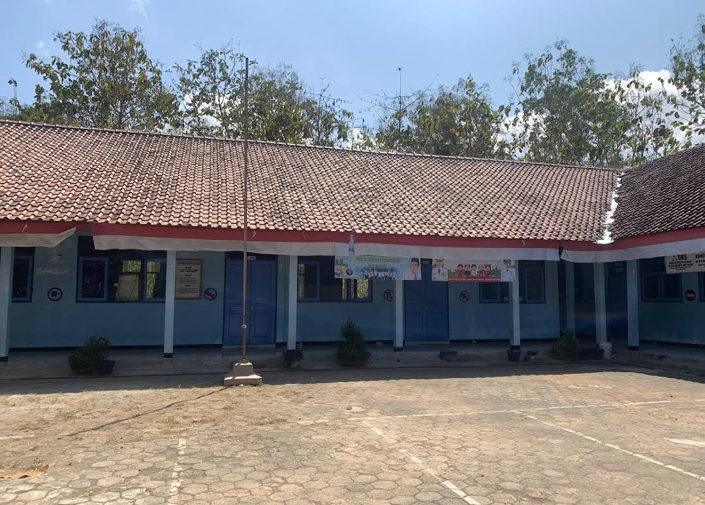
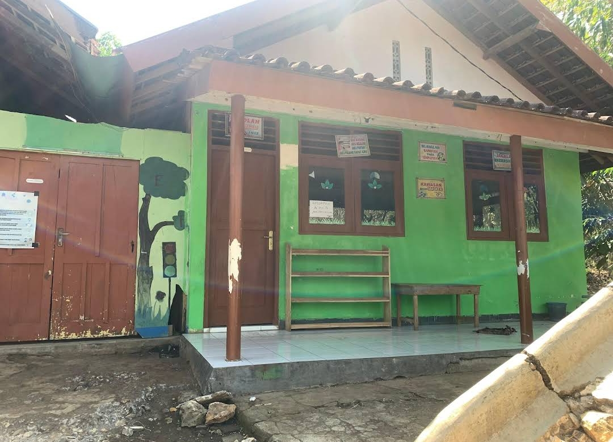

Keagamaan
Fasilitas Umum
Pendidikan

SDN Planjan 2 Saptosari
Ngepoh, Planjan, Kec. Saptosari, Kabupaten Gunungkidul, Daerah Istimewa Yogyakarta 55871

SMP Negeri 2 Paliyan
Singkil, Giring, Kec. Paliyan, Kabupaten Gunungkidul, Daerah Istimewa Yogyakarta 55871

TK Taman Siswa
Ngepoh, Planjan, Kec. Saptosari, Kabupaten Gunungkidul, Daerah Istimewa Yogyakarta 55871